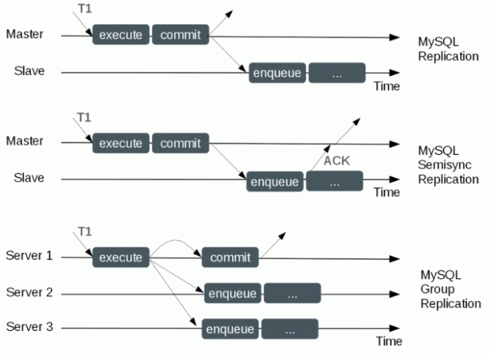
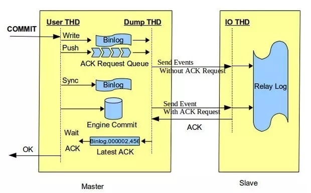
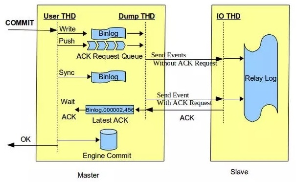
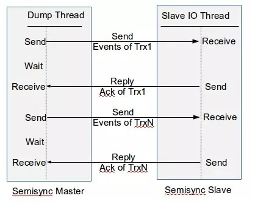
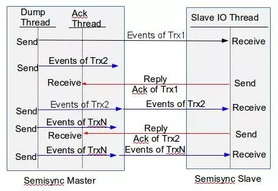
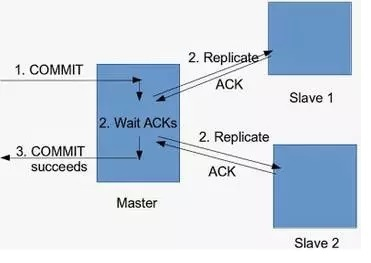
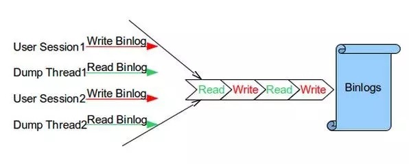
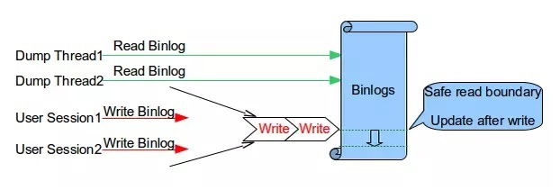

Mysql复制架构的演变
在2000年，MySQL 3.23.15版本引入了Replication。Replication作为一种准实时同步方式，得到广泛应用。这个时候的Replicaton的实现涉及到两个线程，一个在Master，一个在Slave。Slave的I/O和SQL功能是作为一个线程，从Master获取到event后直接apply，没有relay log。这种方式使得读取event的速度会被Slave replay速度拖慢，当主备存在较大延迟时候，会导致大量binary log没有备份到Slave端。
在2002年，MySQL 4.0.2版本将Slave端event读取和执行独立成两个线程（IO线程和SQL线程），同时引入了relay log。IO线程读取event后写入relay log，SQL线程从relay log中读取event然后执行。这样即使SQL线程执行慢，Master的binary log也会尽可能的同步到Slave。当Master宕机，切换到Slave，不会出现大量数据丢失。
在2010年MySQL 5.5版本之前，一直采用的是这种异步复制的方式。主库的事务执行不会管备库的同步进度，如果备库落后，主库不幸crash，那么就会导致数据丢失。于是在MySQL在5.5中就顺其自然地引入了半同步复制，主库在应答客户端提交的事务前需要保证至少一个从库接收并写到relay log中。那么半同步复制是否可以做到不丢失数据呢？下面分析。
在2016年，MySQL在5.7.17中引入了一个全新的技术，称之为InnoDB Group Replication。目前官方MySQL 5.7.17基于Group replication的全同步技术已经问世，全同步技术带来了更多的数据一致性保障。相信是未来同步技术一个重要方向，值得期待。MySQL 5.7 Group Replication
根据上面提到的这几种复制协议，分别对应MySQL几种复制类型，分别是异步、半同步、全同步。 
Mysql的复制
- 异步复制（
Asynchronous replication） - 全同步复制（
Fully synchronous replication） - 半同步复制（
Semisynchronous replication）
异步复制
MySQL默认的复制即是异步的，主库在执行完客户端提交的事务后会立即将结果返给给客户端，并不关心从库是否已经接收并处理，这样就会有一个问题，主如果crash掉了，此时主上已经提交的事务可能并没有传到从上，如果此时，强行将从提升为主，可能导致新主库的数据不完整。
存在的问题
异步复制binlog到从库，从库IO线程接收到后写中继日志（relay log），如果由于网络原因导致relay log延时太多。这时候主库宕机，提升从库为主库，新的主库就会丢失数据。
全同步复制
指当主库执行完一个事务，所有的从库都执行了该事务才返回给客户端。因为需要等待所有从库执行完该事务才能返回，所以全同步复制的性能必然会收到严重的影响。
目前官方MySQL 5.7.17基于Group replication的全同步技术已经问世，全同步技术带来了更多的数据一致性保障。相信是未来同步技术一个重要方向，值得期待。MySQL 5.7 Group Replication
半同步复制
鉴于异步复制比较容易造成数据丢失，Mysql在5.6的版本的时候支持半同步复制
半同步复制介于异步复制和全同步复制之间，主库在执行完客户端提交的事务后不是立刻返回给客户端，而是等待至少一个从库接收到并写到relay log中才返回给客户端。相对于异步复制，半同步复制提高了数据的安全性，同时它也造成了一定程度的延迟，这个延迟最少是一个TCP/IP往返的时间。所以，半同步复制最好在低延时的网络中使用。
半同步复制的特性
半同步在网络超时的场景下会退化为异步复制
如果在等待过程中，等待时间已经超过了配置的超时时间，没有任何一个从节点通知当前事务，那么此时主库会自动转换为异步复制，当至少一个半同步从节点赶上来时，主库便会自动转换为半同步方式的复制。
半同步复制必须是在主库和从库两端都开启
如果从库开了半同步复制，但是主库没有开启半同步复制，则会默认为异步复制
半同步复制的原理

半同步复制存在的问题
半同步复制可能会出现幻读或者数据丢失的情况。
在MySQL 5.5~5.6使用after_commit的模式下，客户端事务在存储引擎层提交后，在得到从库确认的过程中，主库宕机了。此时，即主库在等待Slave ACK的时候，虽然没有返回当前客户端，但事务已经提交，其他客户端会读取到已提交事务。如果Slave端还没有读到该事务的events，同时主库发生了crash，然后切换到备库。那么之前读到的事务就不见了，出现了幻读
MySQL 5.7半同步复制的改进
现在我们已经知道，在半同步环境下，主库是在事务提交之后等待Slave ACK，所以才会有数据不一致问题。所以这个Slave ACK在什么时间去等待，也是一个很关键的问题了。因此MySQL针对半同步复制的问题，在5.7.2引入了Loss-less Semi-Synchronous，在调用binlog sync之后，engine层commit之前等待Slave ACK。这样只有在确认Slave收到事务events后，事务才会提交。在commit之前等待Slave ACK，同时可以堆积事务，利于group commit，有利于提升性能。
- 支持无损复制（Loss-less Semi-Synchronous）
- 性能提升，支持发送binlog和接受ack的异步化
- 性能提升，控制主库接收slave写事务成功反馈数量
- 性能提升, Binlog互斥锁改进
支持无损复制（Loss-less Semi-Synchronous）
在Loss-less Semi-Synchronous模式下，master在调用binlog sync之后，engine层commit之前等待Slave ACK（需要收到至少一个Slave节点回复的ACK后）。这样只有在确认Slave收到事务events后，master事务才会提交，然后把结果返回给客户端。此时此事务才对其他事务可见。在这种模式下解决了after_commit模式带来的幻读和数据丢失问题，因为主库没有提交事务。但也会有个问题，假设主库在存储引擎提交之前挂了，那么很明显这个事务是不成功的，但由于对应的Binlog已经做了Sync操作，从库已经收到了这些Binlog，并且执行成功，相当于在从库上多了数据，也算是有问题的，但多了数据，问题一般不算严重。这个问题可以这样理解，作为MySQL，在没办法解决分布式数据一致性问题的情况下，它能保证的是不丢数据，多了数据总比丢数据要好。
无损复制其实就是对semi sync增加了rpl_semi_sync_master_wait_point参数，来控制半同步模式下主库在返回给会话事务成功之前提交事务的方式。rpl_semi_sync_master_wait_point该参数有两个值：AFTER_COMMIT和AFTER_SYNC
第一个值：AFTER_COMMIT（5.6默认值）
master将每个事务写入binlog（sync_binlog=1），传递到slave刷新到磁盘(sync_relay=1)，同时主库提交事务。master等待slave反馈收到relay log，只有收到ACK后master才将commit OK结果反馈给客户端。

第二个值：AFTER_SYNC（5.7默认值，但5.6中无此模式）
master将每个事务写入binlog , 传递到slave刷新到磁盘(relay log)。master等待slave反馈接收到relay log的ack之后，再提交事务并且返回commit OK结果给客户端。 即使主库crash，所有在主库上已经提交的事务都能保证已经同步到slave的relay log中。

半同步复制与无损复制的对比
1.1 ACK的时间点不同
半同步复制在InnoDB层的Commit Log后等待ACK，主从切换会有数据丢失风险。 无损复制在MySQL Server层的Write binlog后等待ACK，主从切换会有数据变多风险。 1.2 主从数据一致性
半同步复制意味着在Master节点上，这个刚刚提交的事物对数据库的修改，对其他事物是可见的。因此，如果在等待Slave ACK的时候crash了，那么会对其他事务出现幻读，数据丢失。 无损复制在write binlog完成后，就传输binlog，但还没有去写commit log，意味着当前这个事物对数据库的修改，其他事物也是不可见的。因此，不会出现幻读，数据丢失风险。 因此5.7引入了无损复制（after_sync）模式，带来的主要收益是解决after_commit导致的master crash后数据丢失问题，因此在引入after_sync模式后，所有提交的数据已经都被复制，故障切换时数据一致性将得到提升。
性能提升，支持发送binlog和接受ack的异步化
旧版本的semi sync受限于dump thread ，原因是dump thread承担了两份不同且又十分频繁的任务：传送binlog给slave ，还需要等待slave反馈信息，而且这两个任务是串行的，dump thread必须等待slave返回之后才会传送下一个events事务。dump thread已然成为整个半同步提高性能的瓶颈。在高并发业务场景下，这样的机制会影响数据库整体的TPS 。

为了解决上述问题，在5.7版本的semi sync框架中，独立出一个Ack Receiver线程 ，专门用于接收slave返回的ack请求，这将之前dump线程的发送和接受工作分为了两个线程来处理。这样master上有两个线程独立工作，可以同时发送binlog到slave，和接收slave的ack信息。因此半同步复制得到了极大的性能提升。这也是MySQL 5.7发布时号称的Faster semi-sync replication。

但是在MySQL 5.7.17之前，这个Ack Receiver线程采用了select机制来监听slave返回的结果，然而select机制监控的文件句柄只能是0-1024，当超过1024时，用户在MySQL的错误日志中或许会收到类似如下的报错，更有甚者会导致MySQL发生宕机。
semi-sync master failed on net_flush() before waiting for slave reply.
MySQL 5.7.17版本开始，官方修复了这个bug，开始使用poll机制来替换原来的select机制，从而可以避免上面的问题。其实poll调用本质上和select没有区别，只是在I/O句柄数理论上没有上限了，原因是它是基于链表来存储的。但是同样有缺点：比如大量的fd的数组被整体复制于用户态和内核地址空间之间，而不管这样的复制是不是有意义。poll还有一个特点是“水平触发”，如果报告了fd后，没有被处理，那么下次poll时会再次报告该fd。
其实在高性能软件中都是用另外一种调用机制，名为epoll，高性能的代表，比如Nginx，haproxy等都是使用epoll。可能poll的复杂性比epoll低，另外对于ack receiver线程来说可能poll足矣。
性能提升，控制主库接收slave写事务成功反馈数量
MySQL 5.7新增了rpl_semi_sync_master_wait_slave_count参数，可以用来控制主库接受多少个slave写事务成功反馈，给高可用架构切换提供了灵活性。如图所示，当count值为2时，master需等待两个slave的ack。

性能提升, Binlog互斥锁改进
旧版本半同步复制在主提交binlog的写会话和dump thread读binlog的操作都会对binlog添加互斥锁，导致binlog文件的读写是串行化的，存在并发度的问题。

MySQL 5.7对binlog lock进行了以下两方面优化:
移除了dump thread对binlog的互斥锁。
加入了安全边际保证binlog的读安全。

可以看到从replication功能引入后，官方MySQL一直在不停的完善，前进。同时我们可以发现当前原生的MySQL主备复制实现实际上很难在满足数据一致性的前提下做到高可用、高性能。
补充
1.Mysql 并行复制 2.Mysql Slave延时的场景？
参考文档
这边文章写的思路很清晰完成，强烈案例，本文基本是复制过来的。 MySQL 5.7半同步复制技术